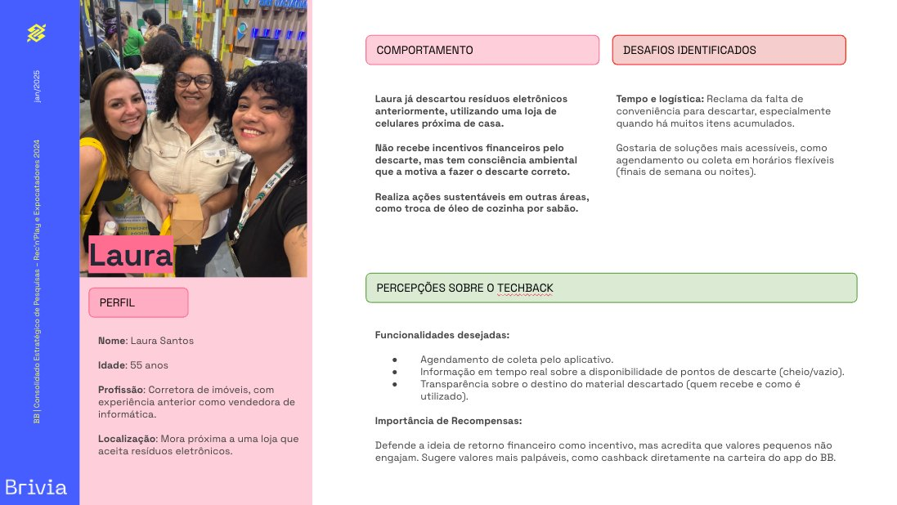
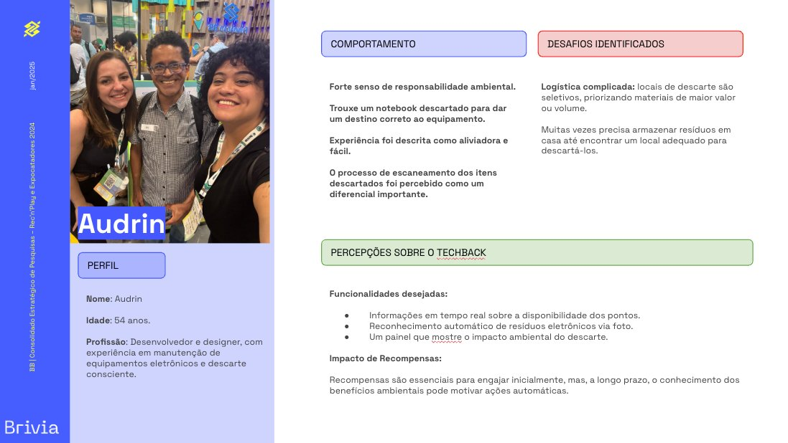
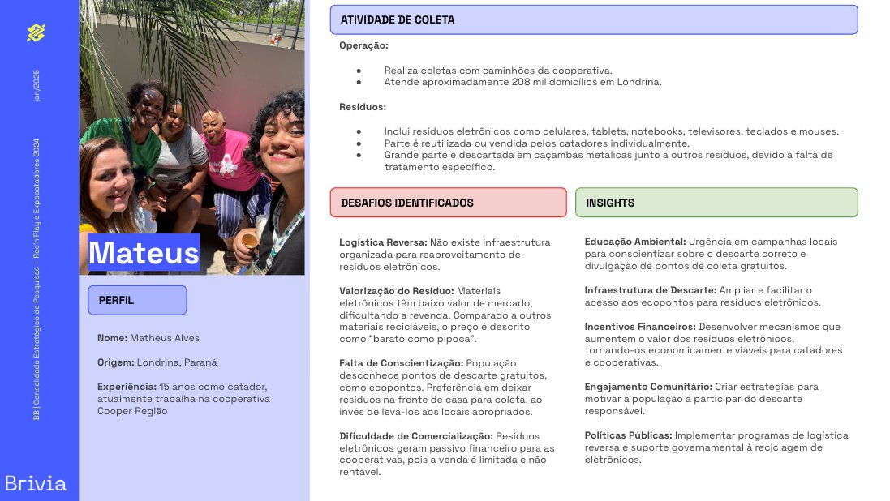
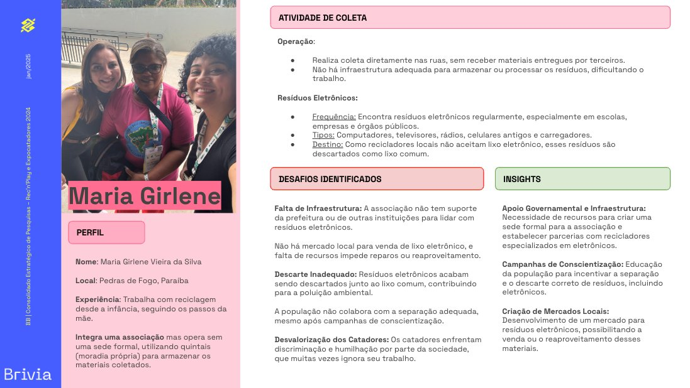
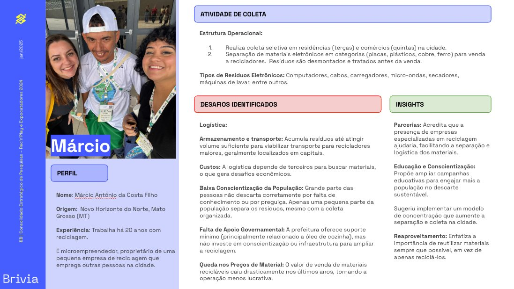

Reinventing how Brazil deals with electronic waste
TechBack set out to transform something deeply physical — collection kiosks placed in cities — into a connected digital ecosystem that rewards people for doing the right thing with their electronic waste. But to build something that actually works, you have to understand the full chain: citizens, waste-pickers, cooperatives, operators.
Banco do Brasil brought the ambition and the infrastructure. I was brought in as UX Researcher and Strategist to make sure the solution would be grounded in real human behavior — not assumptions.
The research happened inside Expocatadores 2024 — the largest circular economy event in Latin America, held in São Paulo in December 2024. TechBack had a physical interactive stand inside the FBB pavilion, which gave us direct access to the people who matter most.
Three days. Three audiences. One mission: understand the ecosystem well enough to design something that doesn't exclude the people it claims to serve.
Without listening to waste-pickers, TechBack Digital risks becoming a solution disconnected from reality. Technology built on assumptions — not on lived experience — excludes the very people who make the circular economy run.
The main challenge was bridging two worlds: cutting-edge digital technology and the everyday reality of people who collect and process e-waste for a living. These are often people working without formal headquarters, storing recyclables in their own backyards, navigating a market where electronic materials are worth almost nothing.
At the same time, we needed to understand citizen behavior — why they discard incorrectly, what would motivate them to change, and how a reward system could genuinely move behavior rather than just feel good on paper. Two very different problems, one research sprint.
Three phases, one truth
Tailored scripts for each audience segment — visitors, waste-pickers, and kiosk operators — with different angles for each profile. Objectives focused on validating TechBack's roadmap and understanding real pain points.
Conducted in-person at the event across 3 days. Adapted methodology on the spot when participation was lower than expected. Documented field notes, photos, and qualitative observations in real time.
Consolidated all insights into a structured report mapping pains, motivations, and opportunities. Designed a proposed digital journey covering access, engagement, and reward flows — plus strategic product recommendations.
The report that came from the field
These are screens from the actual research report delivered to Banco do Brasil — compiled from real interviews conducted at Expocatadores 2024 in São Paulo.


The people behind the waste chain
Each interview surfaced a distinct reality. These aren't personas built from demographics — they're real people, with real names, interviewed at the event.

VisitorHas discarded e-waste before, motivated by environmental awareness — not financial incentives. Wants scheduling, real-time kiosk availability, and cashback directly to her BB app wallet.

VisitorDescribed the scanning experience as a key differentiator. Wants AI photo recognition of items, real-time kiosk status, and an environmental impact dashboard. Believes financial rewards drive initial engagement but environmental awareness sustains it.

Waste-pickerOperates without formal headquarters, storing materials on her own property. E-waste ends up as common trash because no local market exists to buy it. Faces social discrimination. Needs government support and market creation.
 Waste-picker
Waste-picker
Serves ~208,000 households. Electronic waste has very low market value — described as "cheap as popcorn." No reverse logistics infrastructure. People prefer to leave materials at their door rather than bring them to proper points.

Waste-pickerSources from hospitals, companies, and the public. Faces difficulty finding reliable buyers for specific materials (circuit boards, plastics). Does community awareness rounds in neighborhoods to drive correct separation.

OperatorHomologated by Green Electron. Uses logistics software for optimized routes. Batteries travel to Minas Gerais for specialized processing. Recommends automatic PEV notifications, cooperative training, and remote monitoring for the TechBack platform.
What the field actually revealed
For waste-pickers, electronic materials generate almost no revenue. Low market value combined with lack of buyers means e-waste often goes to landfill. Financial rewards and cooperative partnerships are essential to change this.
Environmental awareness motivates, but friction kills follow-through. Scheduling, real-time kiosk availability, and cashback to familiar channels (like the BB app) are the difference between intent and action.
The full chain depends on waste-pickers and cooperatives. A digital solution that ignores their operational reality — no infrastructure, no formal market, social barriers — is a solution that serves only part of the ecosystem.
PEV operators like Reeecicle need automated notifications when kiosks are full, route optimization, and tools to classify materials in real time. Technology that helps the operator runs smoother for everyone downstream.
What I delivered to Banco do Brasil
Tailored scripts for three distinct audiences at Expocatadores 2024 — visitors, waste-pickers, and kiosk operators — each with specific objectives aligned to TechBack's product roadmap.
Conducted in-person at the event over three days. Adapted methodology in real time when participation was lower than planned. Full field documentation: notes, photos, and qualitative observations.
Structured report with user profiles, main pain points, motivations, and strategic opportunities — delivered to BB with clear synthesis and actionable insights per audience segment.
Designed three core flows — access, engagement, and rewards — grounded in research findings and validated against the different user profiles encountered at Expocatadores.
Evidence-based feature recommendations: waste tracking for transparency, scheduled pickups for citizens, AI-powered item recognition, automated PEV notifications, and cooperative training programs. Plus a 2025 roadmap organized by Quick Wins and Long Actions.
The 2025 Roadmap built from field research
Every recommendation in the roadmap traces back to something a real person said or showed us at Expocatadores. Research doesn't end at insights — it ends when it shapes what gets built.


| Quarter | Blueprint & Discovery | Digital Development | Testing & Validation | Partnerships |
|---|---|---|---|---|
| Q1 | Priority TechBack Digital blueprint. Waste-picker blueprint review. Deep discovery (parallel). |
MVP Digital development starts. | — | Initial cooperative workshops. |
| Q2 | — | Launch functional MVP. Feature prototyping. | Initial testing with cooperatives. Feedback loops. | Basic cooperative training. |
| Q3 | — | MVP iteration with improvements. | Controlled expansion. Testing in new areas. | Formalize regional partnerships. |